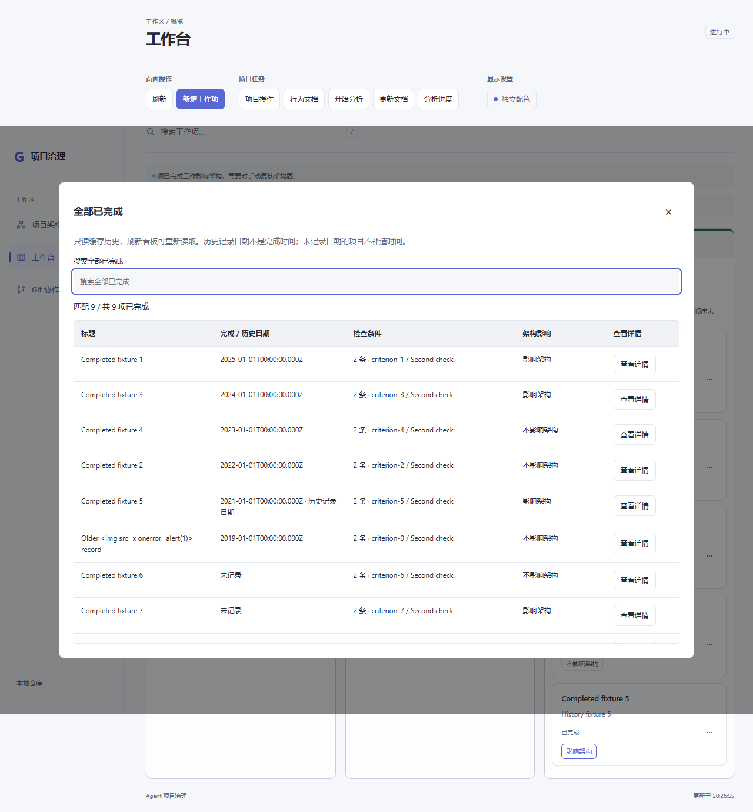
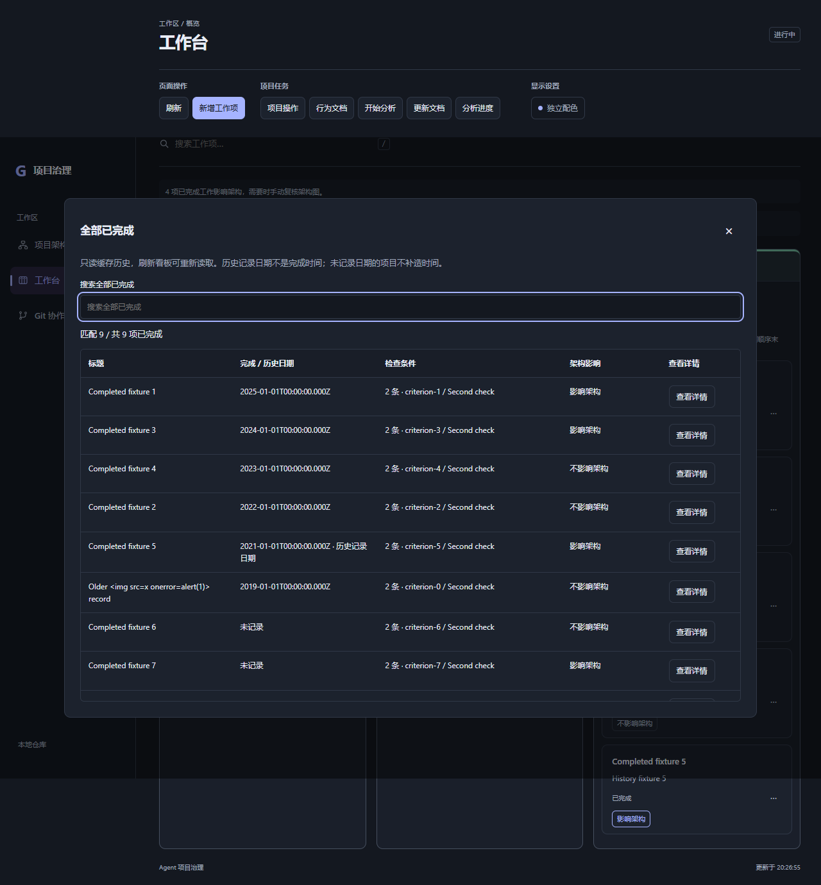
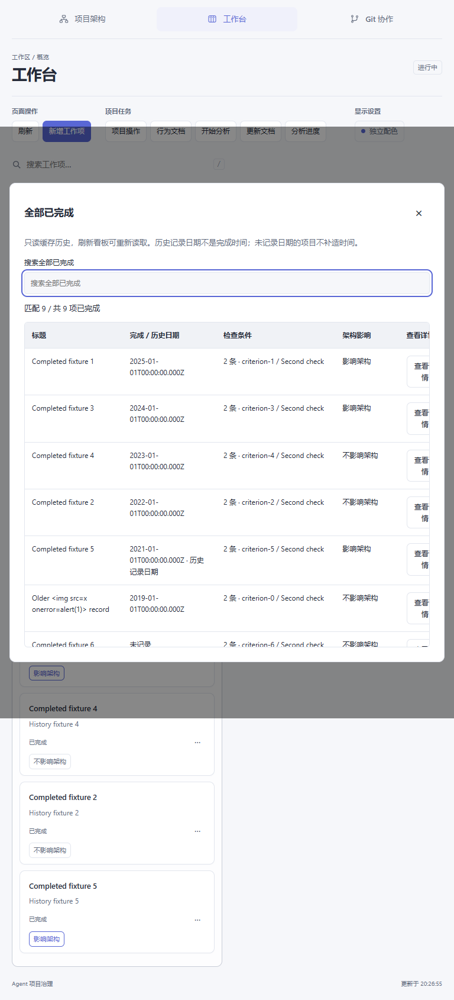
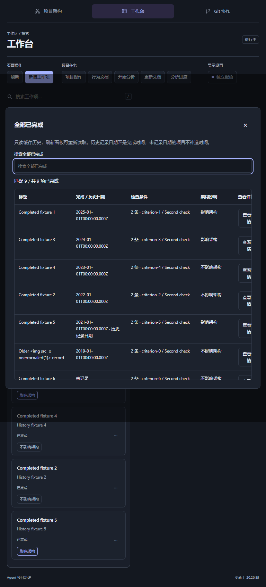
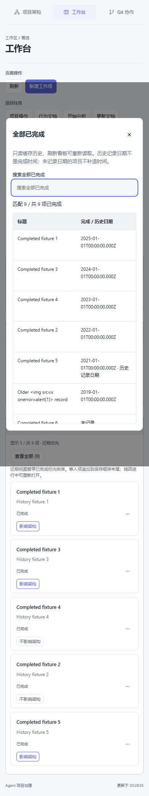
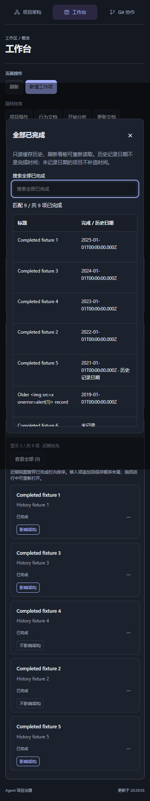

0.7.7 状态修复与完成历史
宿主返回嵌套 status；兼容旧平铺布尔字段，明确空闲且会话匹配才同步完成。待确认、未知、错误和超时保持保守；不重发旧操作。
已完成栏默认最近5项；“查看全部”打开独立搜索表格，保留完整历史。只在真实完成迁移记录时间，旧无时间项显示“未记录”。
实际组合及干净安装检查：136测试通过；Edge模拟宿主桥回归95截图，原10文档场景通过。截图不证明本机安装或真实宿主完整交互。
官方PluginCheck/Pack：60文件，706250字节，SHA256 11d77dbd060304acf05c09edd517a3a530357f0c7c4c64447ea7fa5bdea83a30。权限未增加，市场仍0.7.0，不自动安装。
1280 明色
1280 暗色
768 明色
768 暗色
390 明色
390 暗色